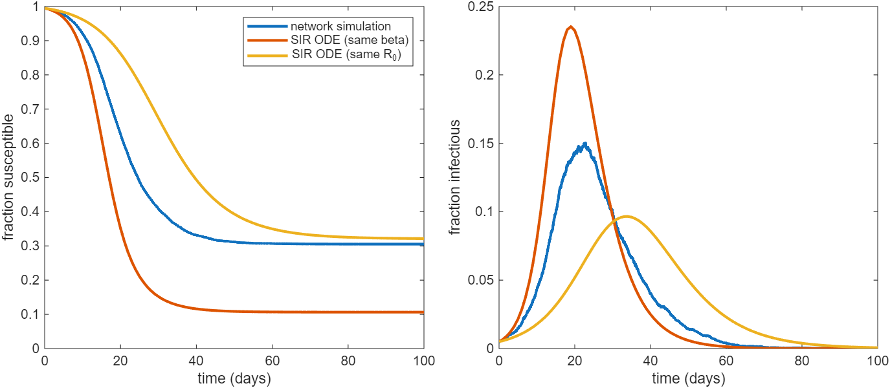
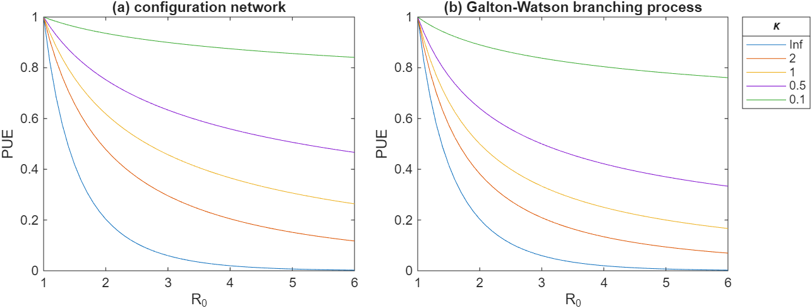
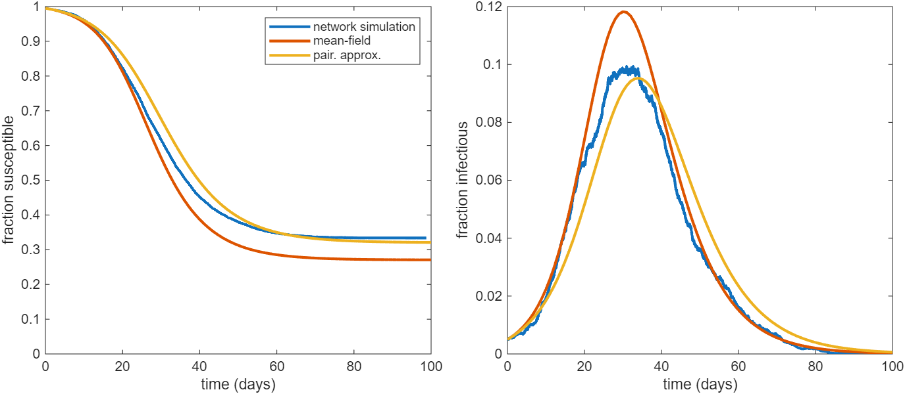
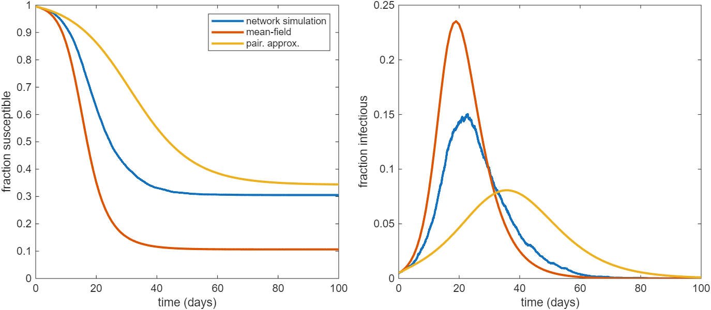

Topic 12. Network models
\[ \newcommand{\vect}[1]{\boldsymbol{\mathbf{#1}}} \newcommand{\R}{\mathcal{R}} \newcommand{\Reff}{\mathcal{R}_\mathrm{eff}} \newcommand{\inc}{\mathrm{inc}} \]
1 Introduction
All the models we have seen so far, even those that include heterogeneous mixing patterns, lack any information about the contact network on which the disease is spreading. Effectively, the population is assumed to be well mixed within whatever subgroups the model has (e.g. age groups), meaning that each new contact is a randomly selected individual from a given group.
This ignores the fact that, often, people make repeated contacts with the same person and that a given pair of contacts are likely to have additional contacts in common.
A network model includes an explicit representation of the network of contacts between individuals along which a disease may be transmitted. Network models of infectious diseases are a large and active are of research, which we can only scratch the surface of here.
This Topic draws on Ch. 7.6 of Keeling and Rohani (2008) and Ch. 10.5 of Dieckmann and Heesterbeek (2000).
2 Representation of a network
Mathematically, a contact network may be represented by a graph, which represents connections between pairs of individuals in the network. In general, the network could be undirected or directed (depending on whether or not connections have an associated direction), weighted (i.e. different connections can have different strength), and time-varying (meaning that connections may form and dissolve over time).
Here, we will focus on the simplest type of network, which is an undirected, unweighted, time-invariant graph. We should remember that this assumes that contacts are symmetric, binary (two individuals are either connected or they are not) and unchanging over time. The first assumption is reasonable in many contexts, the second two are not fully realistic for most real social contact networks.
An undirected graph is a set of vertices \(V\) (which we shall refer to as nodes or individuals) and edges \(E\) (which we shall refer to as contacts), where each edge \(e\in E\) is an unordered pair of vertices \(\{v_i,v_j\}\in V\times V\).
Throughout this topic, we will assume that edges must connect two different vertices, i.e. \(\{v_i,v_i\}\notin E\).
An undirected graph can be represented by a symmetric \(N\times N\) adjacency matrix \(A\) (where \(N=|V|\) is the population size) defined by \[ A_{ij}=\left\{ \begin{array}{ll} 1, & \{v_i,v_j\}\in E \\ 0, & \textrm{otherwise} \end{array} \right. \] In words, \(A_{ij}\) is \(1\) if individuals \(i\) and \(j\) are connected and \(0\) otherwise.
Note for large populations, it may be infeasible to store \(A\) in memory (and it is likely to be inefficient to do computations directly involving \(A\)), but as we shall see it is a useful quantity conceptually and analytically.
2.1 Terminology and notation
Some relevant graph-related terminology and notation:
- The degree \(k_i\) of a vertex \(v_i\) is the number of edges that are incident upon it (i.e. the number of other vertices it is connected to):
\[ k_i = \sum_j A_{ij} \]
- The mean degree is \(\langle k \rangle = (1/N)\sum_{i} k_i\).
- A neighbour of vertex \(v_i\) is another vertex \(v_j\) such that \(\{v_i,v_j\}\in E\) (or equivalent \(A_{ij}=1\)).
- The neighbourhood of vertex \(v_i\) is the set of all neighbours of \(v_i\).
- The density \(\rho\) of the graph is ratio of the number of edges to the maximum possible number of edges on a graph with the same number of vertices, i.e.
\[ \rho=\frac{2|E|}{N(N-1)} = \frac{\langle k \rangle}{N-1} \]
- A path of length \(L\) between vertices \(i\) and \(j\) is a set of \(L\) distinct edges connecting \(v_i\) to \(v_j\), i.e. \(e_l=\{v_{n_l},v_{n_{l+1}}\}\) (\(l=0,\ldots,L-1\)), such that \(n_0=i\) and \(n_{L}=j\).
- A graph is connected if there is a path between every pair of vertices.
- The distance \(d(v_i,v_j)\) between vertices \(i\) and \(j\) is the number of edges in the shortest path between \(v_i\) and \(v_j\).
- The average path length (for a connected graph) is
\[ \bar{l} = \frac{1}{N(N-1)}\sum_{i\neq j} d(v_i,v_j) \]
- A cycle is a path from a vertex \(v_i\) back to itself.
- A tree is a connected graph without cycles.
- Clustering refers to the tendency of connected vertices to share neighbours. This can be measured via the clustering coefficent \(C\), which is the proportion of connected triplets that are triangles.
2.2 Types of network
In general, networks are very high-dimensional objects: for a graph with \(N\) vertices, the adjacency matrix has \(N(N-1)/2\) elements which can each be either \(0\) or \(1\), so the number of unique graphs is \(2^{N(N-1)/2}\). Some of these graphs will be isomorphic (i.e. the same network up to a relabelling of the vertices). Nevertheless, the number of distinct networks is staggeringly large, even on very small populations; for example, there are more than \(10^{34}\) distinct networks on just \(N=19\) vertices!
As a result, it is typically necessary to impose some structure on the network. This may be done by constructing the network from empirical data, or by using a random graph model.
Some common types of network: * A regular network is one in which all vertices have the same degree. * A lattice is a regular network arranged in a repeating layout such as a square or a hexagonal lattice. Lattices have strong clustering and a very long average path length. * Small-world networks are largely lattice-like, but with some number of edges added between random pairs of vertices. These additional edges effectively provide short cuts from one part of the graph to another. This drastically reduces the average path length. * Scale-free networks are networks with a heavy-tailed degree distribution, such as a power-law. * Spatial networks are networks where each node is associated with a location \({\bf x}_i\) in space and nodes to be connected to nearby nodes. For example, a spatial network can be constructed by connected each pair of nodes located at \({\bf x}_i\) and \({\bf x}_j\) with probability \(K\left(|{\bf x}_i-{\bf x}_j|\right)\) for some specified function \(K\).
Random graph models essentially place probability distributions over graphs, and are typically implemented via a probabilistic algorithm that constructs a random graph with certain statistical properties.
One of the simplest random graph models is the Erdős-Rényi (ER) model, where each pair of vertices is connected by an edge with fixed probability \(\rho\), independent of all other pairs. ER networks have low heterogeneity in the number of edges per individual (i.e. the degree), a lack of clustering, and short average path length. ER networks are generally not realistic models of social contact networks in real human populations, but they are useful because they are mathematically tractable and allow the effects of a minimal amount network structure on disease transmission to be elucidated.
We will see some examples using ER networks later.
3 SIR epidemic on a network
Suppose we have an explicit network on a population of size \(N\) defined by adjacency matrix \(A\). Suppose that at each time \(t\), each individual in the network is either susceptible, infectious or recovered. Let \(S_i(t)=1\) if individual \(i\) is susceptible at time \(t\) and \(0\) otherwise, and let \(I_i(t)=1\) if individual \(i\) is infectious at time \(t\) and \(0\) otherwise (\(i=1,\ldots,N\)).
Extensions to other disease models, such as SEIR or a non-Markovian model, are possible but we focus on the simplest SIR case here.
We may define a continuous-time Markov process on the network by defining the rates at which individual \(i\) transitions from one state to another state. Like in the simple SIR model seen in Topic 2, we assume that each infectious individual transitions to the recovered state at fixed rate \(\gamma\).
Similarly the rate at which a susceptible individual \(i\) transitions to the infectious state is equal to the force of infection \(\lambda_i(t)\) acting on that individual at time \(t\). We assume that the force of infection \(\lambda_i(t)\) is proportional to the number of infectious neighbours at time \(t\): \[ \lambda_i(t) = \tilde{\beta} \sum_j A_{ij}I_j(t) \]
Note that, for the purposes of simulating the model, it would be inefficient to compute \(\lambda_i(t)\) using this equation because it involves summing over all \(N\) individuals. Instead, we would normally store the neighbours of each individual \(i\) in a list \(\left\{n_{i,1},\ldots, n_{i,k_i} \right\}\) and calculate \[ \lambda_i(t) = \tilde{\beta} \sum_{j=1}^{k_i} I_{n_{i,j}}(t) \] only updating \(\lambda_i(t)\) at times when one of the neighbours of \(i\) changes state.
This model may be simulated via the Gillespie algorithm or a fixed time-step approximation, as seen in Topic 7.
4 Configuration model
We now look at a special class of random networks constructed using an algorithm known as a configuration model. These networks are characterised by an arbitrary degree distribution, but lack other structure such as clustering and assortativity.
In a configuration model, each of the \(N\) nodes is assigned a degree \(k\) drawn independently from the degree distribution with probability mass function \(p_k\). A node of degree \(k\) is assigned \(k\) “stubs” (i.e. edges whose other vertex is yet to be determined). This process creates a total of approximately \(N\langle k\rangle\) stubs, which are then connected at random to produce \(N\langle k\rangle/2\) edges. Some of the resulting edges may be self-edges or repeated edges, but provided \(N\) is large these will be negligible.
The configuration model is a special type of network that lacks most of the structure of a real social contact network, but nevertheless accounts for the fact that:
- Individuals tend to have repeated contacts with the same set of individuals
- There can be high individual heterogeneity in the number of contacts per individual.
ER networks are a special case of the configuration model with a binomial degree distribution (which is approximately Poisson provided \(N\) is large).
4.1 Degree distribution of infected nodes
In analysing the configuration model, we need to account for the fact that the number of neighbours an individual has (i.e. their degree) affects both their risk of getting infected and, if they do get infected, the number of individuals they will transmit to. Hence infected nodes will, in general, have a different degree distribution than the network as a a whole.
In an almost fully susceptible population, the probability \(\nu_k\) that a randomly selected infected node has degree \(k\) must be proportional to the number of edges that are attached to degree \(k\) nodes, which is \(kp_kN\). This implies that \[ \nu_k = \frac{kp_k}{\sum_{k'} k' p_{k'}} = \frac{kp_k}{\langle k \rangle} \tag{1}\]
The distribution defined by \(\nu_k\) is sometimes called the excess degree distribution as infected nodes will typically have higher degree than randomly chosen nodes.
The fact that a simple expression for \(\nu_k\) is available makes the configuration model more tractable than more general network models.
4.2 Basic reproduction number
Under the SIR model, once a node is infected, it infects each of its neighbours at rate \(\tilde{\beta}\) and recovers at rate \(\gamma\). So the probability the infected individual will transmit to a given neighbour before recovering is \(\tilde{\beta}/(\tilde{\beta}+\mu)\), independently of all other neighbours. An individual of degree \(k\) will have \(k-1\) susceptible neighbours and so, on average, will infect \((k-1)\tilde{\beta}/(\tilde{\beta}+\mu)\) of them.
Conditioning on the degree of the infecting node therefore gives \[ \R_0 = \sum_k \nu_k (k-1) \frac{\tilde{\beta}}{\tilde{\beta}+\mu} \] Substituting in Equation 1 leads to the following result for \(\R_0\).
The basic reproduction number for the SIR model with per-edge transmission rate \(\beta\), recovery rate \(\gamma\) on a configuration network is
\[ \R_0 = \frac{\tilde{\beta}}{\tilde{\beta}+\gamma} \left(\frac{\langle k^2 \rangle}{\langle k \rangle}-1\right) \tag{2}\]
Three aspects of Equation 2 deserve brief mention:
- The ratio \(\langle k^2 \rangle/\langle k \rangle\) is equal to \(\langle k \rangle (1+CV^2)\), which is effectively a “variance correction” to the mean degree \(\langle k \rangle\). This accounts for the fact that high-degree nodes are more likely to get infected than low-degree nodes, meaning the average infected individual has higher than average degree. We have come across a similar expression previously in Topic 11.
- The \(-1\) term reflects the fact that an infectious degree \(k\) node must have been infected by someone and so, even in an otherwise fully susceptible population, has at most \(k-1\) susceptible neighbours. However, it does not account for th effects of clustering (which is absent in the configuration model). In a clustered network, \(\R_0\) will typically be smaller than the expression in Equation 2 because, even when the non-susceptible fraction is negligible at population-level, an average infected individual may have more than one non-susceptible neighbours.
- The factor \(\tilde{\beta}/(\tilde{\beta}+\gamma)\) reflects the fact that a degree \(k\) node contacts the same \(k\) neighbours repeatedly and each one can only be infected at most once (more on this below). If contacts continuously dissolved and reformed at random, we would instead have a factor of \(\tilde{\beta}/\gamma\). So we may quantify the effect of repeated contacts: this reduces \(\R_0\) by a factor \(\gamma/(\tilde{\beta}+\gamma)\).
Note that for a regular network where all nodes have degree \(k\), we have \(\langle k^2\rangle = \langle k \rangle^2\) and so \[ \R_0= \frac{\tilde{\beta} }{\tilde{\beta}+\gamma}\left(\langle k \rangle-1\right) \]
For an ER network, the degree distribution is approximately Poisson, which means that \(\langle k^2\rangle=\langle k \rangle + \langle k \rangle^2\). Therefore, on an ER network \[ \R_0 = \frac{\tilde{\beta} }{\tilde{\beta}+\gamma}\langle k \rangle \]
Thus for ER networks, the fact that infections are more likely to occur in high-degree nodes exactly balances the fact that a node of degree \(k\) can only transmit to a maximum of \(k-1\) individuals, and \(\R_0\) is proportional to the mean degree \(\langle k \rangle\).
Real-world networks often have very heterogeneous degree distributions, and as a result \(\R_0\) may be many times larger than \(\tilde{\beta}/( \tilde{\beta}+\gamma)\langle k \rangle\).
4.3 Simulation results
Figure 1 shows the results of a simulation of the SIR model on an ER network with mean degree \(\langle k \rangle=5\), transmission rate \(\tilde{\beta}=0.1\) day\(^{-1}\) and recovery rate \(\gamma=0.2\) day\(^{-1}\). Also shown is the solution of the SIR ODE model in two cases: (i) with the same average rate of transmission-sufficient contacts (\(\beta=\langle k \rangle \tilde{\beta}= 0.5\) day\(^{-1}\)); and (ii) and with the same value of \(\R_0=5/3\).

The network simulation grows more slowly and has lower peak prevalence than the ODE model with the same mean contact rate \(\beta\). This is primarily due to the effect of repeated contacts in the network model.
When the value of \(\beta\) in the ODE model is reduced to give the same \(\R_0\) as the network model, it grows more slowly than the network model (though has very similar final size). This happens because, although the network model has the same reproduction number as the same as the ODE model, it has a shorter generation interval. In the network model, once an edge has been “used” for transmission, it cannot be used again and so the infectiousness drops with each transmission event. Thus we observe the following.
The infectiousness profile for an individual with \(k\) neighbours is \[ f(\tau) = k\tilde{\beta} e^{-(\gamma+\tilde{\beta}) \tau} \] and so the mean generation interval is \(1/(\gamma+\tilde{\beta})\). This is smaller than for the ODE model with the same infectious period, which has mean generation interval \(1/\gamma\).
Note that Figure 1 compares the ER network model to the SIR ODE model with the same value of \(\R_0\) and same mean infectious period \(1/\gamma\). We could alternatively consider the ODE model with a shorter mean infectious period in the ODE model (i.e. higher value of \(\gamma\)) than the network model, so that both models have the same values of \(\R_0\) and epidemic growth rate \(r\).
4.4 Weak and strong transmission limits
For an ER network in the case where \(\tilde{\beta}/\gamma\ll 1\), we have \(\R_0\approx \tilde{\beta} \langle k \rangle/ \gamma\) and the generation interval is approximately \(1/\gamma\). Hence we would expect the network model to behave similarly to the ODE model in this parameter regime, sometimes called the weak transmission limit.
This should not come as a surprise: if we let the network density \(\rho\) approach \(1\), we see that \(\langle k\rangle\) approaches \(N\) and hence, for fixed \(\R_0\), \(\tilde{\beta}/\gamma\) must be very small. So this limit corresponds to the situation where there is a (weak) connection between every pair of individuals. In other words, our population is well-mixed and homogeneous, precisely the assumptions of the SIR ODE model.
By contrast, in the strong transmission limit (\(\tilde{\beta}/\gamma\to\infty\)), an infected individual is guaranteed to infect all their neighbours. In this limit, we see that \(\R_0\to\langle k\rangle\): the basic reproduction number is determined solely by network properties (namely the mean degree) and independently of the transmission and recovery rates rates.
4.5 Probability of extinction
Suppose that the model is initialised with a single seed infection in a randomly selected individual and we want to calculate the probability this sparks a major epidemic.
Let \(q_k\) denote the probability that the transmission chain starting from a single degree \(k\) node in a fully susceptible population goes extinct. Conditioning on the degree of the initial seed infection gives \[ q = \sum_k p_k q_k \]
For the transmission chain starting from a degree \(k\) node to go extinct requires that, for each of the neighbours \(\{v_1,\ldots,v_k\}\), either \(v_i\) not infected, or the transmission chain starting from \(v_i\) goes extinct. An infected individual transmits to each of its neighbours independently with probability \(P\). (In the SIR model, we have seen that \(P=\tilde{\beta}/(\tilde{\beta}+\gamma)\), but in more general models it can be any value in \([0,1]\)).)
Hence \(q_k=(1-P+P\pi)^k\), where \(\pi\) is the probability that the transmission chain starting from a randomly selected neighbour of the seed infection goes extinct. We may calculate \(\pi\) using the results from Topic 6, by observing that, other than the seed infection, infected nodes have degree distribution \(\nu_k\). Hence the generating function \(G_X(s)\) for the offspring distribution (excluding the seed infection) is \[ G_X(s) = \sum_n \sum_k P(\textrm{degree } k \textrm{ node has } n \textrm{ offspring}) \nu_k s^n = \sum_k \nu_k G_k(s) \] where \(G_k(s)\) is the generating function for the offspring distribution for a degree \(k\) node. This offspring distribution is \(\mathrm{Bin}(k-1,P)\), so \(G_k(s)=(1-P+Ps)^{k-1}\). Recalling from Topic 6 that \(\pi\) is the root of \(s=G_X(s)\), we obtain the following result.
The extinction probability \(q\) for an epidemic seeded by a randomly selected node in a configuration network with per-edge transmission probability \(P\), degree distribution \(p_k\) and excess degree distribution \(\nu_k\) is \[ q = \sum_k p_k \left( 1-P+ P\pi \right)^k \] where \(\pi\) is the unique root in \((0,1)\) of \[ \pi = \sum_k \nu_k \left(1-P+P\pi\right)^{k-1} \]
Figure 2 shows the extinction probability for a configuration network with a negative binomial degree distribution with fixed per-edge transmission probability \(P\) and for a range of values of \(\R_0\) and dispersion parameter \(\kappa\). The extinction probability is a decreasing function of both \(\R_0\) and \(\kappa\) and is very similar (though not identical) to a Galton-Watson branching process. The difference between the two models comes down to the fact that, in the network model, the offspring distribution of the initial seed infection is different to that of downstream infections.

Note that the above result for the extinction probability assumes that an infected nodes transmits to each susceptible neighbour with the same probability \(P\). The result can be generalised to allow for each node to have its own individual per-edge transmission probability \(P_i\) independent of degree, drawn from some continuous distribution – see Ch. 10.5 of Dieckmann and Heesterbeek (2000). This combines two sources of heterogeneity: heterogeneity in the number of contacts (i.e. degree), and heterogeneity in the probability of transmission per contact (which could be due to biological factors such as individual variability in viral load).
4.6 Final epidemic size
Recall from Topic 6 that the probability of a major epidemic and final epidemic size in a large population are closely related. In fact, by considering the backwards branching process ending with a given individual, we may reason in exactly the same way to show that the expected fraction of the population infected by the epidemic is \(1-q\).
To briefly restate the previous argument in reverse, the probability \(q\) that a randomly selected individual escapes infection is \(q=\sum_k p_k q_k\) where \(q_k\) is the probability that a randomly selected degree \(k\) individual escapes infection. Again \(q_k=(1-\langle P\rangle+\langle P\rangle\pi)^k\) where \(\langle P\rangle\) is the average of the individual-specific per-edge transmission probabilities \(P_i\) and \(\pi\) is the probability that a randomly selected ancestor escapes infection. The ancestor distribution of a degree \(k\) node (i.e. the distribution of the number of individuals who would, if they became infected, transmit to that node) is \(\mathrm{Bin}(k-1,\langle P\rangle)\), the degree distribution of ancestors is \(\nu_k\) and the result follows.
Note that, unlike the extinction probability, this result for final size depends only on the average of the individual-specific transmission probabilities \(P_i\). This is because the ancestor distribution depends only on \(\langle P\rangle\), not on the individual-specific \(P_i\).
We finish by emphasising that the results in this section are specific to the configuration model, with its lack of clustering and assortativity. The epidemic threshold, probability of extinction and final epidemic size may differ dramatically on more general networks. In fact, there are multiple possible definitions of \(\R_0\) for general network models. All have the epidemic threshold in common (i.e. an epidemic is possible if and only if \(\R_0>1\)), but differ in quantitative value. See Kiss et al. (2017) for more details.
5 Pair approximation
At the very beginning of this course in Topic 1, we saw an expression for the expected number of new infections in a short period of time \(\delta t\). With a slight modification, we may write this as \[ \textrm{rate of new infections per unit time} = \tilde{\beta}k S(t)x(t) \] where \(S(t)\) is the number of susceptible hosts, \(k\) is the average number of contacts per person, \(\tilde{\beta}\) is the per-contact transmission rate, and \(x(t)\) is the probability that a contact at time \(t\) is infectious. Making the simplifying assumption that contacts are selected at random means that \(x(t)\) is just the fraction of the population that is infectious, leading to the standard SIR expression \[ \textrm{rate of new infections per unit time} = \frac{ \tilde{\beta}k S(t)I(t) }{N} \]
This ignores correlations between the disease statuses of the two individuals in the contact. More generally, we let \([SI](t)\) denote the number of connected pairs of individuals, where one individual is susceptible and the other is infectious. Then we may obtain a more accurate expression: \[ \textrm{rate of new infections per unit time} = \tilde{\beta} [SI](t) \]
From here on, we will drop the tilde and just use \(\beta\) to denote the per-contact transmission rate.
Now, we may write down an ODE for the dynamics of \([SI](t)\) by considering the ways in which susceptible-infectious pairs may arise or disappear. For simplicity, we begin with the SIS model, in which individuals become susceptible again immediately after recovery. We will return to the SIR model later. ## SIS model
In the SIS model, the processes that can create susceptible-infectious pair are:
- \([SSI]\longrightarrow [SII]\). One individual in a \([SS]\) pair is infected by a third individual outside the pair.
- \([II] \longrightarrow [SI]\). One individual in a \([II]\) pair recovers and becomes susceptible again.
On the other hand, a susceptible-infectious pair can be destroyed in the following ways:
- \([SI]\longrightarrow [II]\). The susceptible infectious in a \([SI]\) pair is infected by the infectious individual.
- \([ISI]\longrightarrow [III]\). The susceptible individual in a \([SI]\) pair is infected by a third individual outside the pair.
- \([SI]\longrightarrow [SS]\). The infectious individual an a \([SI]\) pair recovers and becomes susceptible again.
Putting this together gives the follow ODE for \([SI](t)\): \[ \dot{[SI]} = \beta[SSI] + \gamma[II] - \beta[SI] - \beta[ISI] - \gamma [SI] \]
Notice that this ODE depends on the number of triples \([SSI]\) and \([ISI]\). We could follow a similar procedure to obtain ODEs for these quantities, but these would depend on the number of quadruples, and so on.
Instead, we make an approximation (known as a closure) for the number of triples in terms of the number of pairs and singles: \[ [ABC] \approx \frac{n-1}{n} \frac{[AB][BC]}{[B]} \] where \(n=\langle k\rangle\) is the mean degree.
This approximation ignores any correlation that may exist in the disease statuses of the nodes at the ends of the triple (i.e. A and C) other than that they are connected via B. Therefore, if the network has a high frequency of triangles so that there is a non-negligible probability that A and C are directly connected, the approximation may lose accuracy. However, it is still likely to be more accurate than the standard mean-field approximation \([AB]=n[A][B]/N\), which closes the system at the level of singles instead of at the level of pairs.
Noting that the total number of individuals is \(N\), and the total number of pairs is \(nN\), we have \(S+I=N\), and it can be shown that \([SS]+[SI]=nS\) and \([SI]+[II]=nI\). Then we may write the system in terms of \(S\) and \([SI]\).
The SIS model pair approximation equations are \[ \begin{align} \dot{S} &= -\beta[SI] + \gamma(N-S) \\ \dot{[SI]} &= \beta\frac{n-1}{n} \frac{ \left(n S-2[SI]\right)[SI]}{S} - \beta[SI] + \gamma\left(n (N-S)-2[SI]\right) \end{align} \]
5.1 SIR model
In the SIR model, we need to keep track of \([SS]\) and \([SI]\) pairs. \([SS]\) pairs cannot be created (as the flow is one way from \(S\) to \(I\) to \(R\), but can be destroyed as follows:
- \([SSI]\longrightarrow [SII]\). One individual in a \([SS]\) pair is infected by a third individual outside the pair.
This process also creates an \([SI]\) pair (and is the only way an \([SI]\) pair can be created). On the other hand, \([SI]\) pairs can be destroyed in the following ways (similarly to the SIS model):
- \([SI]\longrightarrow [II]\). The susceptible infectious in a \([SI]\) pair is infected by the infectious individual.
- \([ISI]\longrightarrow [III]\). The susceptible individual in a \([SI]\) pair is infected by a third individual outside the pair.
- \([SI]\longrightarrow [SR]\). The infectious individual an a \([SI]\) pair recovers.
Applying the same closure approximation as previously, this leads to the following system.
The SIR model pair approximation equations are \[ \begin{align} \dot{S} &= -\beta[SI] \\ \dot{I} &= \beta[SI] - \gamma I \\ \dot{[SI]} &= \beta\frac{n-1}{n} \frac{ \left([SS]-[SI]\right)[SI]}{S} - \beta[SI] - \gamma[SI] \\ \dot{[SS]} &= -2\beta \frac{n-1}{n} \frac{ [SI][SS] }{S} \end{align} \]
Figure 3 compares a simulation of the SIR model on an ER network with mean degree \(n=25\), \(\beta=0.0143\) days\(^{-1}\) and \(\gamma=0.2\) days\(^{-1}\) against the solution of the mean-field (i.e. SIR ODE) model and the pair approximation. We see that the mean-field model overestimates the peak prevalence and final epidemic size, while the pair approximation does a slightly better job, particularly for final size, although slightly underestimates peal prevalence.
Figure 4 shows the same set of results but with a mean degree of \(n=5\) and \(\beta=0.1\) days\(^{-1}\) (which gives the same value of \(\R_0=5/3\) as in Figure 3). Here we see that both the mean-field model and the pair approximation do a poor job (though in opposite directions). The reason is that the degree distribution is too heterogeneous: with \(n=5\) and a Poisson degree distribution, the standard deviation in degree is close to 50% of the mean.


This serves as a useful reminder that the systems derived in this section may provide reasonable approximations for relatively simple networks without significant clustering or assortativity and where the degree distribution is relatively homogeneous. More sophisticated approximations are required for highly clustered, assortative or heterogeneous networks – see Kiss et al. (2017) for more details.